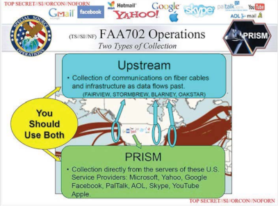

C1-ESDN-04 : Edward Snowden et la surveillance de masse#
Objectifs pédagogiques#
aborder le concept de surveillance de masse
saisir les apports d’Edward Snowden comme whistleblower
questionner sa pratique sur les réseaux.
Watergate 1972#
L’année 1972 est une année d’élection présidentielle. Le Président américain en poste est le Républicain Richard Nixon. Il est opposé au Démocrate George MacGovern. L’équipe de Nixon - Président des Etats-Unis - installe un système électronique de surveillance de son adversaire, le parti démocarate dans l’immeuble dit du Watergate à Washington DC.
Ce scandale qui a été révélé par des journalistes de deux journaux nationaux : le Washington Post et le New York Times. Richard Nixon, élu en 1972 pour un nouveau mandat est contraint à la démission en août 1974.
L’affaire dite du Watergate, ou scandale du Watergate n’est pas restée sans conséquences.
Foreign Intelligence Surveillance Act 1978 - 2008 - 2024#
Cette loi permet au gouvernement américain de surveiller physiquement et électroniquement des individus, des états et des entreprises aussi bien américaines qu’étrangères. Elle a été amendée en 2008 pour permettre l’utilisation des programmes de surveillance de masse PRISM et Upstream.
La loi fait toujours foi
9/11 New York City, Arlington, Shanksville 2001#
Le 11 septembre 2001, quatre avions détournés au départs des deux aéroports américains Washington Dulles et Boston Logan s’écrasent dans les deux tours jumelles de New York, dans l’aile ouest du bâtiment du Pentagone à Arlington et dans un champs à Shanksville en Pennsylvanie.
Ces attentats ont entraîné la mort directe de 2977 morts et 6291 blessés. Ce sont les attentats les plus meurtriers de l’Histoire.
Les conséquences ont été majeures. Aussi bien pour les citoyens américains que pour les citoyens du monde entier
USA PATRIOT ACT#
Cette loi (qui signifie Uniting and Strengthening America by Providing Appropriate Tools Required to Intercept and Obstruct Terrorism Act, adoptée quelques mois après les attentats par le Congrès des Etats-Unis. L’objectif de la loi est de permettre au gouvernement américain de détenir des personnes étrangères soupçonnées de terrorisme sans limite et sans inculpation.
Le USA Patriot act autorise surtout une surveillance d’Etat des citoyens américains ou ailleurs dans le monde et qui utilisent des systèmes informatiques américains.
C’est le point de départ légal de la surveillance de masse
CLOUD ACT 2018#
Cette loi (qui signifie Clarifying Lawful Overseas Use of Data Act) a été adoptée en 2018 par le congrès américain. Elle autorise le troisième pouvoir américain (la justice) à forcer les fournisseurs de services sur le cloud (notamment les grands groupes américains GAFAM) à fournir les données électroniques relatives aux citoyens américains n’importe où sur la Terre
Cette loi entre en contradiction complète avec le RGPD Européen
A la manoeuvre : la NSA#
C’est l’agence américaine NSA (National Security Agency) qui est chargée de mettre en oeuvre la volonté du gouvernement américain des activités de surveillance de masse.
Les deux missions principales :
SIGINT : Signal Intelligence (renseignement d’origine électronique)
IA : Information Assurance (sécurité des systèmes de communications)
Ce sont des dizaines de milliers d’employés qui travaillent pour la NSA. Dont une grande partie sont sous-traitants : ils sont employés d’une société tierce travaillant pour la NSA. C’est le cas d’Edward Snowden
Qui est Edward Snowden#
Edward Snowden est un ingénieur brillant travaillant pour l’entreprise Booz Allen Hamilton, une société contractant pour la NSA comme ingénieur système à Hawaï, l’un des hub de surveillance de masse de la NSA (SIGINT). C’est durant son séjour à Hawaï qu’il récupère et copie sur des clefs USB les documents top secrets (voir références) décrivant l’entier du système de surveillance de masse américain.
Une fois les documents enregistrés, il déménage à Hong Kong en 2013. Il s’apprète à devenir un whistleblower, un lanceur d’alerte en contactant par email crypté, la journaliste Laura Poitras et le journaliste Glenn Greenwald sous le pseudo CITIZENFOUR.
I did what I believed right and began a campaign to correct this wrongdoing. I did not seek to enrich myself. I did not seek to sell U.S. secrets. I did not partner with any foreign government to guarantee my safety. Instead, I took what I knew to the public, so what affects all of us can be discussed.
La révélation des documents TOP-SECRET#
Edward Snowden a révélé au monde entier, par les voix et les articles de Laura Poitras et Glenn Greenwald, la surveillance de masse à l’échelle du monde entier par les gouvernements de l’alliance dites des FIVE EYES (USA, Royaumes Unis, Australie, Canada et Nouvelle-Zélande) sur l’ensemble des citoyens du monde.
Trois principaux logiciels sont dévoilés :
PRISM (collecte de renseignements SIGINT)
XKeycore (collecte, structure, sauvegarde et recherche de renseignements SIGINT)
Upstream (espionnage des canaux de communications terrestres et aériens)


Edward Snowden a aussi dévoilé l’interception et l’espionnage des communications de diverses personnalités politiques comme l’ancienne chancelière allemande Angela Merkel.
Raisons de dévoiler ces informations#
Edward Snowden dit qu’il a dévoilé ces informations parce que les prérogatives de la NSA et des gouvernements impliqués allaient trop loin. Il a souhaité alerter l’opinion publique du changement de paradigme : d’une surveillance individuelle de cibles dangereuses on est passé à une surveillance de masse : tout le monde était concerné.
These programs were never about terrorism: they’re about economic spying, social control, and diplomatic manipulation. They’re about power.
Conséquences pour Edward Snowden#
Edward Snowden a été inculpé aux USA pour espionnage, vol de données, violation du secret professionnel. Il est considéré comme un traître par le gouvernement américain mais comme un héro pour celles et ceux qui militent pour la liberté, la souverainté et l’anonymat sur le réseau des réseaux.
Obligé de s’exhiler, il a choisi la Russie où il est citoyen Russe depuis 2022.
Conséquences des révélations#
La NSA n’a jamais cessé d’espionner le reste du monde. Malgré quelques modifications légales américaines, la surveillance de masse continue probablement à exister.
Les grandes entreprises américaines dont nous dépendons (Google, Apple, Meta, X, Amazon, Microsoft, etc..) étaient - et sont toujours probablement - complices de cette surveillance de masse.
L’Europe a profité des révélations de 2013 pour faire adopter le RGPD (Réglement Général sur la Protection des Données) à l’ensemble des pays européens en 2018. La Suisse ne l’a pas ratifié mais est obligée de le respecter si elle traite des données d’entreprises Européennes.
Le concept de souveraineté numérique émerge peu à peu dans les sphères politiques, même si elle peine à faire sa place dans les sphères techniques
USA FREEDOM ACT#
En 2015, le Patriot Act a été abrogé au profit du Freedom Act (Uniting and Strengthening America by Fulfilling Rights and Ensuring Effective Discipline Over Monitoring Act). Cette loi prétend retirer du pouvoir de surveillance de masse à la NSA. Elle a juste limité le perimètre de collecte.
Film CITIZENFOUR#
Visionner une dizaine de minutes avec un extrait d’une conférence donnée par William Binney, ex-employé de la NSA et vétéran, spécialiste du chiffrement et de l’analyse de données.
Pourquoi CITIZENFOUR utilise l’expression : “(..) cela ne nous rend pas our autant invulnérables et est uniquement destiné à nous donner un peu d’air” ?#
Réponse
Parce qu’il connaît les capacités de la NSA à décrypter des emails.
Quel événement a provoqué le programme de surveillance de masse aux États-Unis ?#
Réponse
Binney insiste sur le fait que le programme a été lancé quelques jours seulement après les attentats terroristes du 11 septembre 2001, sous l’égide du président George W. Bush.
Pourquoi le gouvernement a-t-il fait appel à William Binney?#
Réponse
En 2001, il était l’une des seules personnes qui travaillait sur l’analyse de données massives à la NSA. Il y développait un programme d’analyse automatisée de métadonnées qui suscita l’intérêt du gouvernement dans le cadre de la mise en place d’une surveillance de la population, suite aux attentats du 11 septembre
Par quelles instances le programme Stellar Wind aurait-il été autorisé ?#
Réponse
Le programme Stellar Wind, qui comprenait notamment la surveillance des citoyens américains via les données des principales entreprises de télécommunications (dont AT&T), a été autorisé par la direction de la NSA, de la CIA et le Département de la Justice. Bon nombre d’intervenants en haut lieu étaient au courant de l’existence du programme de surveillance de masse.
William Binney et trois autres de ses confrères à la CIA donnent deux raisons à leurs efforts d’attirer l’attention de leur hiérarchie sur ce programme : lesquelles ?#
Réponse
D’abord, cette surveillance est anticonstitutionnelle ; d’autre part, ce programme est supervisé par le Département de la justice.
Quelles ont été les réponses données par la hiérarchie à ces démarches d’objection de la part de Binney et ses collègues?#
Réponse
Ils ont été menacés et sommés de se taire
Références#
L. Poitras, Citizenfour, 2015, [Laura, 2015]
The Edward Snowden Archives : voir l’entier des documents révélés par Ed Snowden
The United Stated DoD (Pentagon) Impact resulting from the Compromise of Classified Material by A Former NSA Contractor pentagon
Libremenet inspiré de modulo VD
Comment est-ce que CITIZENFOUR a pris contact avec les journalistes Laura Poitras et Glenn Greenwald ?#
Réponse
Par email crypté. Il s’assure d’abord que les clés de cryptage de Laura Poitras n’ont pas été interceptées